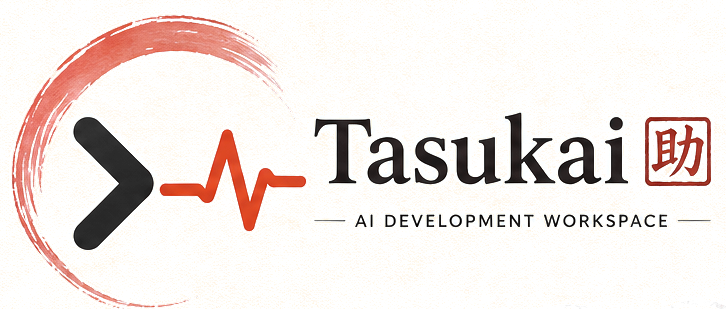
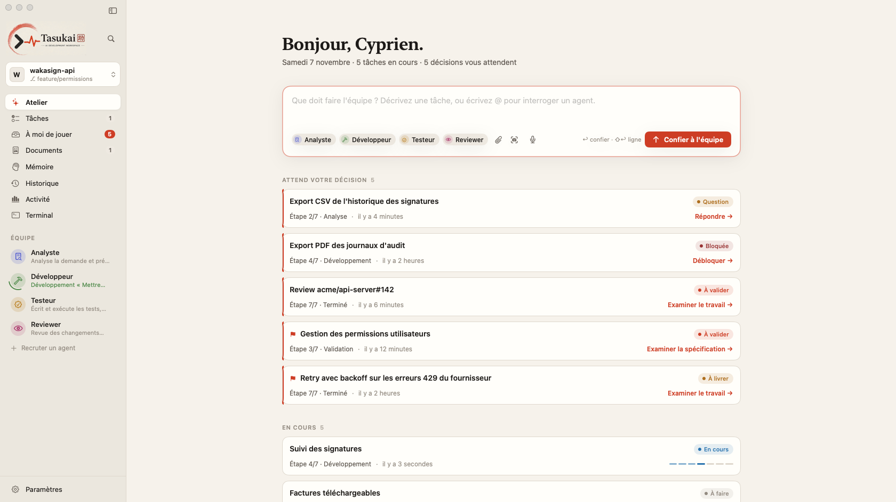
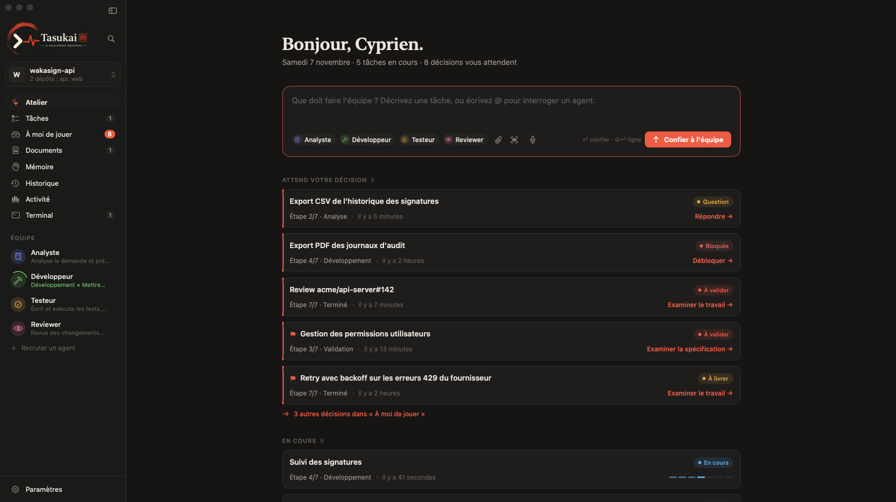
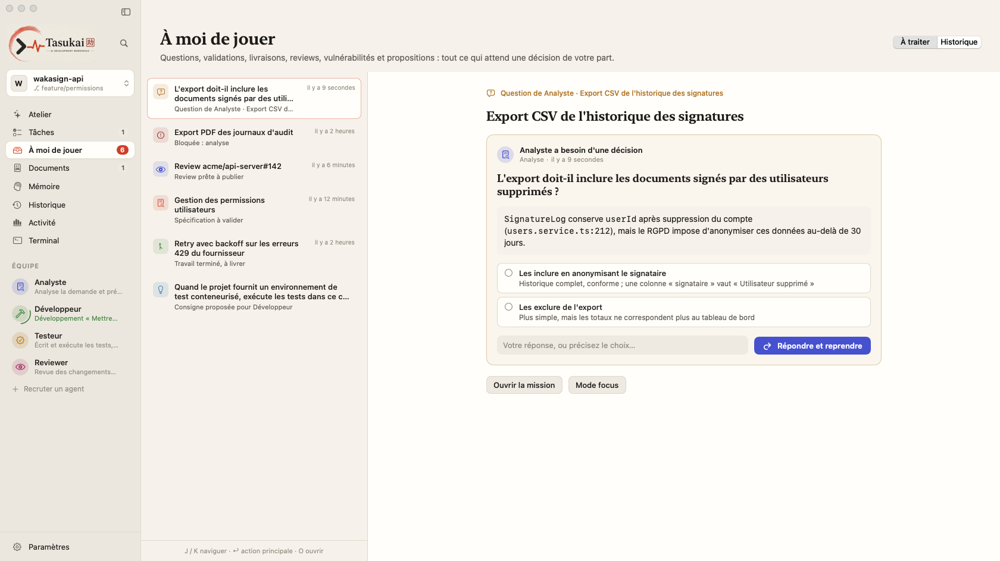
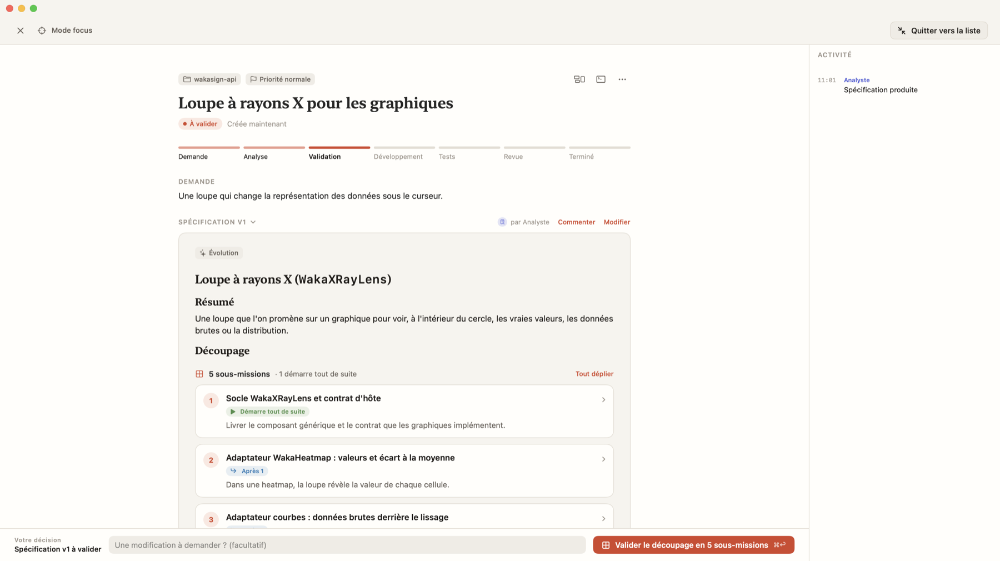
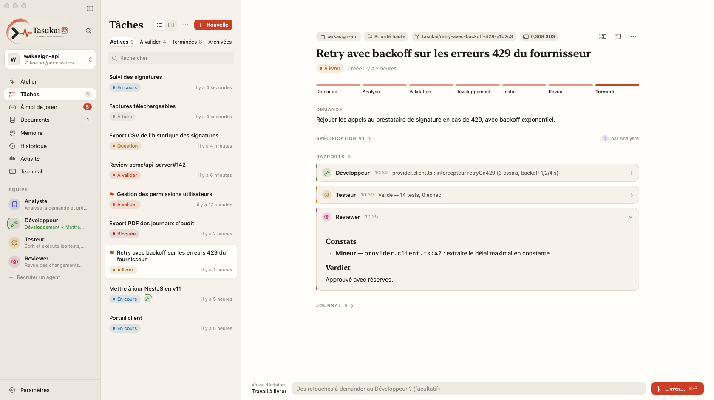
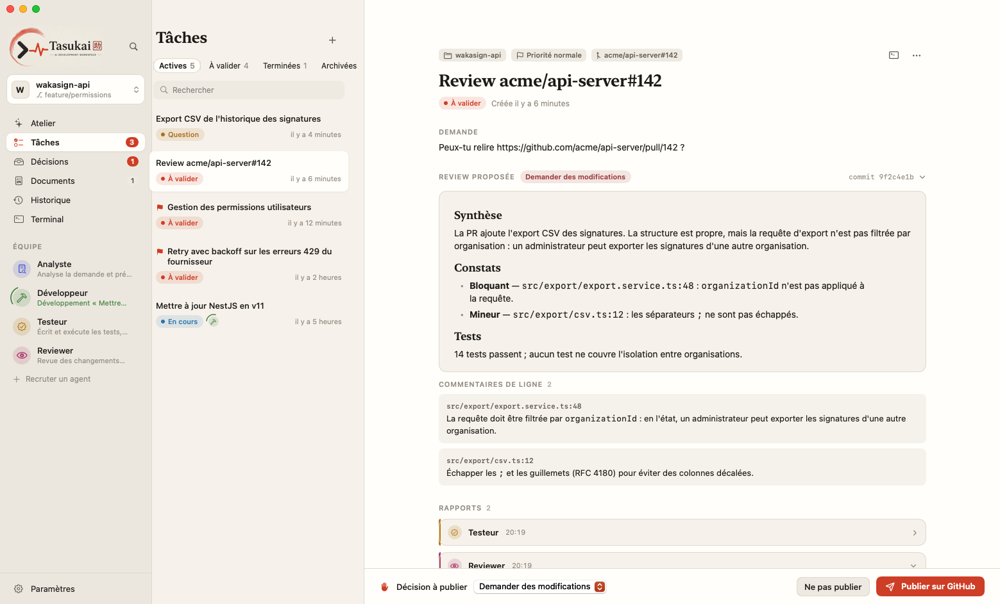
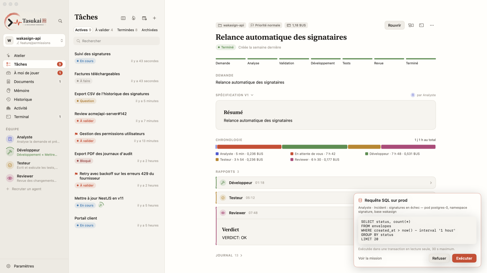
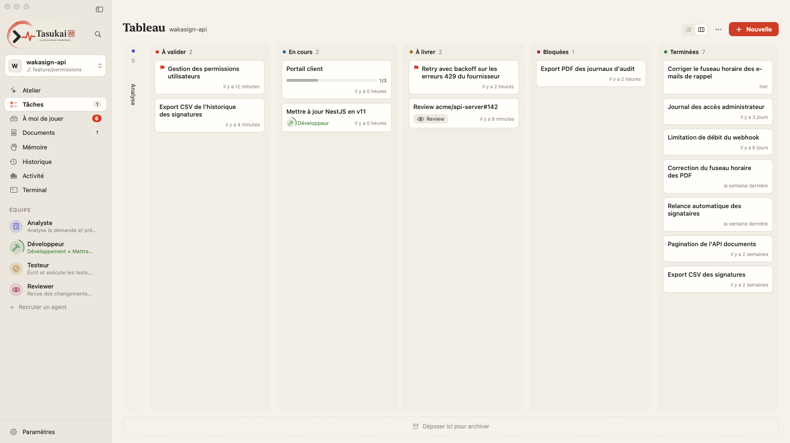

Analyste
Explore le code, pose les questions métier, rédige la spécification et le plan Git d'après votre CLAUDE.md.
lecture seule

Tasukai (助け合い, « s'entraider ») est une application macOS native. Décrivez le besoin : l'Analyste rédige la spécification, le Développeur implémente sur une branche isolée, le Testeur vérifie, le Reviewer relit. Vous n'intervenez que lorsqu'une décision humaine est nécessaire.


Chaque agent est une exécution de Claude Code avec ses outils, son mode de permission et son prompt imposés par la ligne de commande. L'Analyste et le Reviewer ne peuvent rien modifier.
Explore le code, pose les questions métier, rédige la spécification et le plan Git d'après votre CLAUDE.md.
Implémente dans un worktree dédié, commite selon vos conventions, corrige après les retours de review.
Écrit et exécute les tests, reproduit les bugs avant correction, capture les écrans avant/après.
Relit le diff complet, rend un verdict argumenté et peut bloquer la livraison. Publie aussi vos reviews GitHub.
Tasukai orchestre les étapes, observe l'état Git de chaque dépôt, interprète les verdicts du Testeur et du Reviewer, et ne vous rend la main qu'aux points de décision.
Une phrase, une capture, une stack trace ou un lien de PR.
Spécification, plan Git, découpage en sous-missions si besoin.
Commentez passage par passage, comme une PR.
Branche isolée dans un worktree dédié.
Bug reproduit par un test avant toute correction.
Verdict argumenté, revue de sécurité si nécessaire.
Diff par dépôt, puis une pull request par dépôt.
Chaque étape est visible, chaque décision vous revient, chaque action est tracée.
Quand une règle métier manque, l'agent s'arrête et pose une question claire, avec contexte, options et conséquences. Après votre réponse, il reprend sa propre session là où il s'était arrêté.

L'Analyste propose des sous-missions et leurs dépendances. Les indépendantes avancent en parallèle, les autres par vagues ; chaque sous-mission terminée est fusionnée dans la branche du lot.
⇧⌘F : spécification, diff en direct et activité côte à côte
Diff de chaque dépôt fichier par fichier, rapport de chaque agent, puis push et pull request avec le compte gh de la machine. Les retours de review sont corrigés dans le chantier, tests et revue repassent.

Collez un lien de PR ou laissez Tasukai repérer les reviews qui vous sont demandées : le Testeur exécute les tests sur le code de la PR, le Reviewer rend son analyse avec des commentaires de ligne.

Tasukai liste les kubeconfig du Mac et vous accordez, contexte par contexte, l'accès aux logs et à l'état — voire aux requêtes SQL. Chaque requête peut attendre votre accord et s'exécute dans une transaction en lecture seule.
--readonly dans le terminal intégré
Validez, répondez aux agents, choisissez une maquette et suivez l'équipe depuis l'iPhone ou un Portal posé sur le bureau. Appairage par code, échanges chiffrés.
Hors de chez vous, l'iPhone et le Portal joignent le Mac par un relais qui ne voit que des données chiffrées de bout en bout. Désactivable.
Installez des plugins Claude Code depuis le catalogue, créez vos skills, et choisissez lesquels chaque agent peut utiliser.
Nouvelle version détectée sur GitHub, empreinte SHA-256 vérifiée, installée et relancée en un clic.
Les missions par étape, sous-missions regroupées. Glisser une carte valide une spécification ou accepte une livraison.
Cherchez dans tout ce que l'équipe a produit, posez une question en langage naturel : la réponse cite ses sources.
Reprenez une mission dans Claude Code interactif sur la même session ; les échanges et commits reviennent dans Tasukai.
Audit des dépendances chaque lundi, CHANGELOG chaque vendredi : confiés à l'Analyste à l'heure prévue.
Versions majeures en retard et vulnérabilités par dépôt ; une seule mission pour tout corriger.
Durée médiane, temps d'arbitrage, coût par jour et par agent, indicateurs de réussite.
Chantiers lourds limités selon la RAM et la pression mémoire, agents en priorité basse, Vitest bridé.
Palette ⌘K, nouvelle tâche ⌘N, terminal ⌘T, dictée transcrite sur votre Mac.
Analyses, rapports, visites guidées d'un dépôt et pages de présentation, exportables en Markdown.
SwiftUI, thèmes clair et sombre, inspiré du papier washi et de l'encre.

Les garde-fous sont imposés par la ligne de commande de Claude Code et par Tasukai, pas par une consigne dans un prompt.
Outils et mode de permission fixés par agent ; documentation accessible uniquement via des domaines et dossiers ciblés.
Un worktree par chantier, limité aux dépôts concernés. Push et pull requests uniquement sur votre action.
Ajout seul, garanti par un trigger SQLite. Jetons, clés et mots de passe masqués avant écriture.
Le contenu du code, des données et de la documentation est traité comme information, jamais comme instruction.
Pas de kubectl pour les agents, secrets exclus, SQL contrôlé puis exécuté en transaction lecture seule avec délai maximal.
SQLite sur votre Mac, aucune télémétrie. Seuls les appels de Claude Code sortent de la machine. Conservation réglable.
Binaire universel, Intel et Apple Silicon, pour macOS 14 Sonoma et ultérieur.
xattr -dr com.apple.quarantine /Applications/Tasukai.appEmpreintes SHA-256 :
claude dans le PATH, ou son chemin indiqué dans les Paramètres.gh, facultatif : pull requests et reviews GitHub.npm install -g @anthropic-ai/claude-code
claude # se connecter une première foisLes données sont stockées dans ~/Library/Application Support/Tasukai/.
Tasukai est gratuit. Il pilote Claude Code avec le compte déjà configuré sur votre Mac (abonnement Claude ou clé API) : la consommation est celle de Claude Code, et Tasukai affiche le coût de chaque mission.
Tasukai n'a aucune télémétrie et stocke tout en local. Seuls les appels de Claude Code sortent de la machine, exactement comme lorsque vous l'utilisez dans le terminal. L'accès à distance des applications iPhone et Portal passe par un relais qui ne transmet que des messages chiffrés de bout en bout, et la recherche de mises à jour interroge GitHub une fois par jour ; les deux se désactivent dans les Paramètres.
Non. Chaque mission travaille dans un worktree Git dédié, sur une branche isolée, limité aux dépôts concernés. Rien n'est poussé sans votre action, et le chantier est nettoyé après fusion.
Il s'arrête et pose une question bloquante, avec contexte, options et conséquences. Seule la mission concernée attend ; après votre réponse, l'agent reprend sa session là où il s'était arrêté.
Oui. Un dossier parent contenant plusieurs dépôts est reconnu comme un projet ; seuls les dépôts concernés par une mission reçoivent un worktree, et la livraison ouvre une pull request par dépôt.
Oui. Tasukai limite les chantiers qui exécutent du code selon la RAM (un seul sur 8 Go, réglable), attend si macOS signale une pression mémoire et fait tourner les agents en priorité basse.
Cette première version est signée localement, pas encore avec un certificat Developer ID notarisé. Autorisez-la une fois dans Réglages Système › Confidentialité et sécurité. La notarisation est prévue.
Gratuit, natif, et vous gardez le dernier mot.